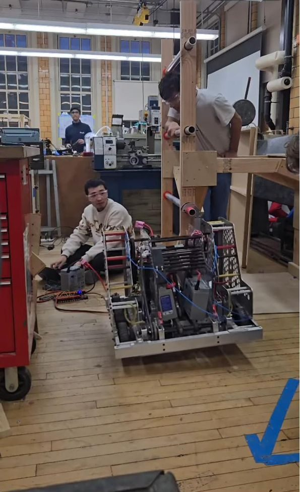
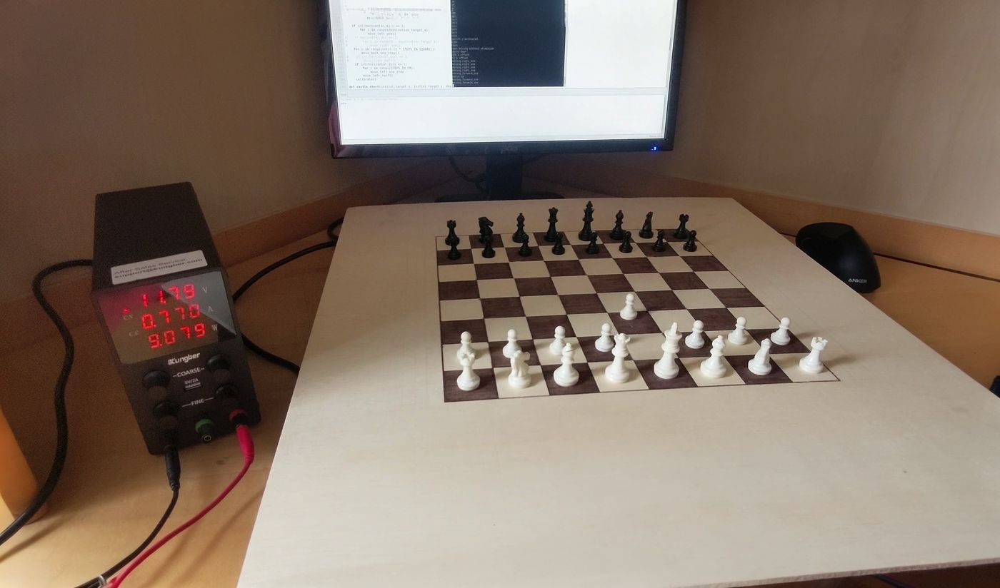

Filip Raczkowski
Mechanical Design Engineer | CAD, Product Design & Prototyping
I’m a mechanical design engineer with 6+ years of CAD experience and a long background in hands-on building, including three years designing, machining, and testing hardware for competitive robotics, where I ultimately led the mechanical design of a World Championship-qualifying team. I work in Fusion 360, Inventor, and SolidWorks, write my own CAM toolpaths, and machine a lot of my own parts, so I design with how a part will actually be made in mind. I’m currently doing freelance mechanical design work.
- filip.raczkowski.eng@gmail.com
- YouTube
- New York City, open to relocation
Leadscrew climb and load-bearing bearing block
Designed and machined for FRC Team 334’s 2026 robot.
This climb was designed to lift the entire 135 lb robot from its side in under half a second, and it works a lot like the Z axis on a 3D printer. A Kraken X60 with a gear reduction drives an acme lead screw through a belt, and a high-speed acme nut held in the bearing block carries the load.
I led the climb’s design while running the mechanical department and machined much of it myself, from the load-bearing bearing block to many of the plates. It also became my main project for training the teammate who’s taking over as lead after me, who learned to run the machines working alongside me.
During the first load test, the belt started skipping. The standard belt tension calculator didn’t hold up under loads this high, so we laser-cut a few test rigs to find a tension that actually worked. After that, the climb lifted over 200 lb while running at only 2 V of the available 12 V and drawing 15 A against our 120 A current limit. We ran the load tests at low power, but at full power it climbed in under half a second.
In the end, it was cut from the competition robot for weight. Looking back, the next place I’d take weight out is the square tube itself, pocketing it with FEA to confirm it keeps its stiffness, the same approach we’d already used on the large side plate.

The bearing block
The bearing block is the part that actually carries the full weight of the robot, and it’s one I designed and machined entirely on my own. It slides half an inch into the climb’s square aluminum tube, so the 1.240 in boss had to fit the tube’s 1.25 in opening while still holding eight bearings on dowel pins and a threaded bore for the acme nut. That left walls only 0.065 in thick, which I held to ±0.002 in.
I modeled it parametrically, so the bearing, dowel, and stock sizes and the machine tolerances are all driven by named parameters. I ran FEA on the thin walls in Inventor, and since the acme nut threads directly into the aluminum and carries the whole robot, I also calculated thread stripping, bolt pull-out, and bolt shear for the bolts holding the block in the tube. I wrote the toolpaths in Inventor CAM and machined it in two halves so the bearings and dowels are held in place between them. After trying thread milling, we settled on hand-tapping the center bore as the simpler option, and the acme nut threads in smoothly and locks at the end.
Belt drive plates
These plates sandwich the climb’s belt drive and support the shafts for its bearings and pulleys. My first design came back from FEA with a minimum safety factor of 0.86, too low for a part carrying climb loads, so I increased the thickness to 0.25 in. That raised the minimum to 1.89 before the plates went to the mill.
Made in house
Our team machines nearly everything in house, down to the bearing blocks. I made these alongside the teammate I was mentoring, who was learning to machine at the time.
Lead Mechanical Engineer, FRC Team 334
TechKnights is Brooklyn Technical High School’s 60-person FIRST Robotics team.
In my last season, I led the mechanical department of 20+ students. I divided the robot’s mechanisms across the team, oversaw the design and in-house manufacturing, and spent a lot of my time training the student who’s taking over as lead after me.
That season, we ranked 5th of 51 in qualifications at the NYC Regional and qualified for the FIRST Championship in Houston for the first time in 12 years. The team also won the Innovation in Control Award at the NYC Regional and the Team Sustainability Award at the Gotham Regional.
- Season 1Designed and machined the hooks for that year's climb.
- Season 2Co-led a small group that designed and built a climbing mechanism.
- Season 3Served as Lead Mechanical Engineer and led the design of the climb shown above.
Self-playing chess board
Personal project, December 2022 to July 2024.

This was my last big personal project before joining the robotics team. The board moves its own pieces using a magnetic CoreXY gantry underneath, driven by two stepper motors and a custom stepper-driver PCB that I designed and revised twice. I designed the entire project in Fusion 360, including the PCB, and 3D printed all of the motion parts.
I originally planned to detect the pieces with Hall-effect sensors, but the board ended up being too thick for them to pick up the magnets, so I switched to voice input instead. Moves are spoken into a microphone, and Python on a Raspberry Pi handles the motors and the connection to Lichess.
Tools and skills
I started CAD in Fusion 360 about six years ago, moved to Inventor three years ago, and also work in SolidWorks.
| Area | What I use |
|---|---|
| CAD | Autodesk Inventor (Certified User, 2026), Fusion 360, SolidWorks, Onshape |
| CAM and machining | Inventor CAM toolpaths, 3-axis CNC mill, lathe, CNC router, plasma cutter, laser cutter |
| Additive | FDM printing in PLA and TPU: about six years on my own printer, plus the team’s Bambu Lab and MakerBot machines |
| Analysis and documentation | FEA, technical drawings, GD&T, tolerancing, design for manufacturing |
| Electrical and software | PCB design, Python, Raspberry Pi |
| Education | Brooklyn Technical High School, Electrical Engineering major, 2026 |